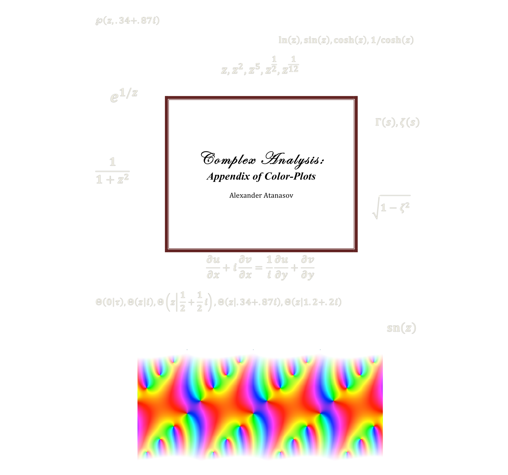

What I do:
I'm a junior at Yale, pursuing joint M.S./B.S. degrees in mathematics and a B.S. in physics.
Over the summer of 2016, I was a visiting researcher at the Perimeter Institute for Theoretical Physics in Waterloo, Canada. My research there centered on finding ways around the curse of dimensionality by applying a method called sparse grid discretization. These are used for efficiently, and moreover feasibly, handling large data sets for numerically modelling the behaviour of high-dimensional dynamical systems, such as Einstein's field equations. This is an ongoing project on which I am collaborating with Erik Schnetter, and we intend to publish our results within the coming months.
During the schoolyear, I work as an undergraduate researcher in computational neuroscience at the Murray Lab, under Dr. John Murray at the Yale School of Medicine, Psychiatry N3 Division. My work is on studying the dynamics that allow recurrent neural networks (RNNs) to form working memory for cognitive task function. The idea is that by understanding these dynamics for artificial RNNs, we can gain insight to the mechanisms behind emergent working memory in the prefrontal cortex. In particular, we can study how disorders such as schizophrenia arise as defects in these mechanisms.
This website serves as a repository for some of my academic work, research, and personal projects. Go ahead and find something you like. A lot of the site is still in the process of being built.
Academic Papers
Dynamic Memory in Recurrent Neural Networks
Overview of the background behind the computational neuroscience of recurrent networks. Final Review and Progress Report of my computational research on dynamic memory in recurrent neural networks at the Murray lab.(Spring 2016) [PDF]
Graded Lie Algebras, Supersymmetry, and Applications
Final term paper on supersymmetry for Francesco Iachello's class on Group Theory, Lie Algebras, and their applications to physics. Many of the examples are taken from the material he provided me (c.f. the references section).(Fall 2015) [PDF]
Lectures and Lecture Notes

Preliminary Lecture: Fiber Bundles and Lie Groups
Preliminary notes written for a set of lectures prepared for Professor Igor Frenkel's Graduate Seminar on Topics in Representation Theory. The focus of my talks is on the ADHM construction of instantons, and studying the moduli space of instantons using tools in algebraic geometry to allow us to do calculations of the partition functions. These notes review prerequisite undergraduate material necessary for understanding the subsequent lectures: fiber bundles and Lie groups.(Fall 2016) [PDF]
Covariance, Contravariance, Manifolds, and their Flows
Lecture that I gave to the high school students participating in the Perimeter Institute's International Summer School for Young Physicists (ISSYP). Introduction of manifolds and vector fields to students with calculus background. Covered linear algebra topics such as direct sums and tensor products of vector spaces and co/contravariance. The end goal was to motivate the intuition behind the idea of a Lie Algebra/Lie Derivative in terms of vector flows.(Summer 2016) [YouTube]
Galois Representations, Cuspidal Eigenforms, and Maass Forms at 1/4
Notes written for a final lecture in Math 868 Spectral Geometry. A brief introduction to algebraic number theory, and then a focus on the correspondence between two dimensional representations of the absolute Galois group and Hecke/Maass eigenforms on the upper half plane.(Spring 2016) [PDF]
6j symbols and the Tetrahedron
Notes written for a final lecture in Math 501 Representation Theory. Exposition of the 6j symbols and the remarkable fact that geometric information about an associated tetrahedron volume gives asympototically correct estimates for the symbols themselves.(Spring 2016) [PDF]
Books
Representations of a Physical Universe
A book that I'm currently writing with my friend Aaron, covering the ideas of mathematical physics from the ground up. It is not meant as an introductory academic textbook, but rather as a pedagogical supplement to the more common texts on the same topics. We wish to emphasize ideas that, in our opinion, were not placed at high enough importance for a student entering the field to appreciate their weight. The book is intended to be open source, in the sense that anyone can access it online and edit it as they wish. This way, we can have close friends collaborate with us on Github so that together our ideas can make the text as pedagogically accessible as possible. It's coming along really nicely so far!(Summer 2016, Expect to publish in the Fall) [Github]
Complex Analysis: In Dialogue
A book I wrote back in high school on complex analysis. It was initially a set of notes written as a result of self-study over the Summer of 2013. Gradually, it grew into a larger pedagogical work. The dialogue of the book is in the style of Johann Joseph Fux's work Gradus ad Parnassum, a formal conversation between teacher and student at length on a large subject. You can see the type of fun I had as a 17 year-old... I wouldn't imagine writing any type of "dialogue" like this now, but its still fun to look back and re-read parts. Despite it being a teenager's first effort at textbook-writing the book definitely has some good parts. You can find it on Amazon here, but its off-sale right now for revision.(Fall 2013) [PDF]

Complex Analysis: Appendix of Color Plots
Accompanying color plots for students and readers to be able to visualize some of the complex functions mentioned in the above work. The plots were made in Java using elementary classes in complex-number arithmetic and graphics. You can find it on Amazon here.(Fall 2013) [PDF]
Fun with visualization and graphics
Demonstrations made for Yale Physics 170/171 Biological Systems:
Demonstration 1 The Brownian Motion of two Tracked Tethered Particles
Demonstration 2 Brownian Motion in 1D and the Central Limit Theorem
Demonstration 3 The Moran model of genetic drift of alleles in a population
Demonstration 4 The SIR model of a disease epidemic in a static population.